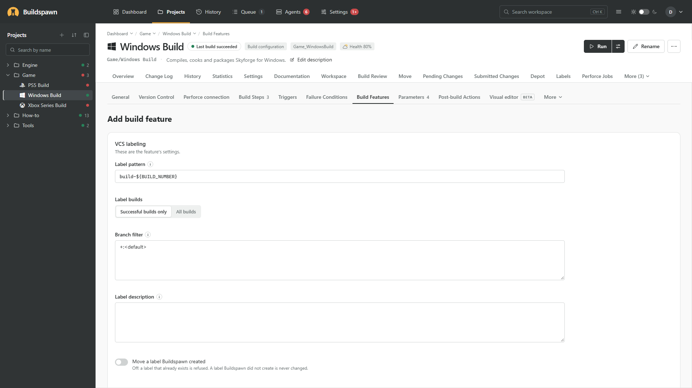

VCS labeling
Puts a label on the Perforce revision that a build used, so you can find the exact files again.
When to use it
Use it when you need to rebuild or compare a release later. The label is named from the build, for example build-1.4.2. Anyone can then sync that label in P4V.

How to set it up
- Open the build configuration, click Settings, then Build Features. Click Add build feature and choose VCS labeling.
- If the build configuration has several Perforce roots, choose the Perforce root.
- Set the Label pattern.
- Choose Label builds: only successful builds, or every build.
- Click Save.
Every field
| Field | What it does | Default | Example |
|---|---|---|---|
| Perforce root | Which root to label when the build configuration has several. A build that did not check out this root gets a warning. | The only root | Main |
| Label pattern | The name of the label. You can use build variables. | build-${BUILD_NUMBER} | skyforge-${BUILD_NUMBER} |
| Label builds | Which builds get a label: successful builds only, or every build. | Successful builds only | Successful |
| Branch filter | Which branches are labelled. One rule per line: +:name or -:name. * matches any text, <default> is the stream of the root. The last matching rule decides. Empty labels every branch. | Empty | +:main |
| Label description | Text for the description of the label. You can use build variables. | Empty | Skyforge build ${BUILD_NUMBER} |
| Move a label Buildspawn created | Off: a label that already exists is refused. On: move a label that Buildspawn made. A label that Buildspawn did not make is never changed. | Off | Off |
| Email on failure | Who to tell when labelling fails, separated by spaces or commas. Uses the mail server of the global settings. | Empty | p4-admin@studio.example |
A worked example
Windows Build uses the label pattern skyforge-${BUILD_NUMBER} with Label builds set to successful builds. Build 142 creates the label skyforge-142 on the changelist it synced.
What you see when it runs
The build log shows the label being created. The Perforce Labels tab of the build configuration lists it.
Problems and fixes
| Problem | What to do |
|---|---|
| The label already exists | Use a pattern with the build number, or turn on Move a label Buildspawn created if the label was made by Buildspawn. |
| Warning: root not checked out | The build did not use the root you chose. Choose the root the build syncs. |
| No label on a failed build | That is the default. Set Label builds to every build. |